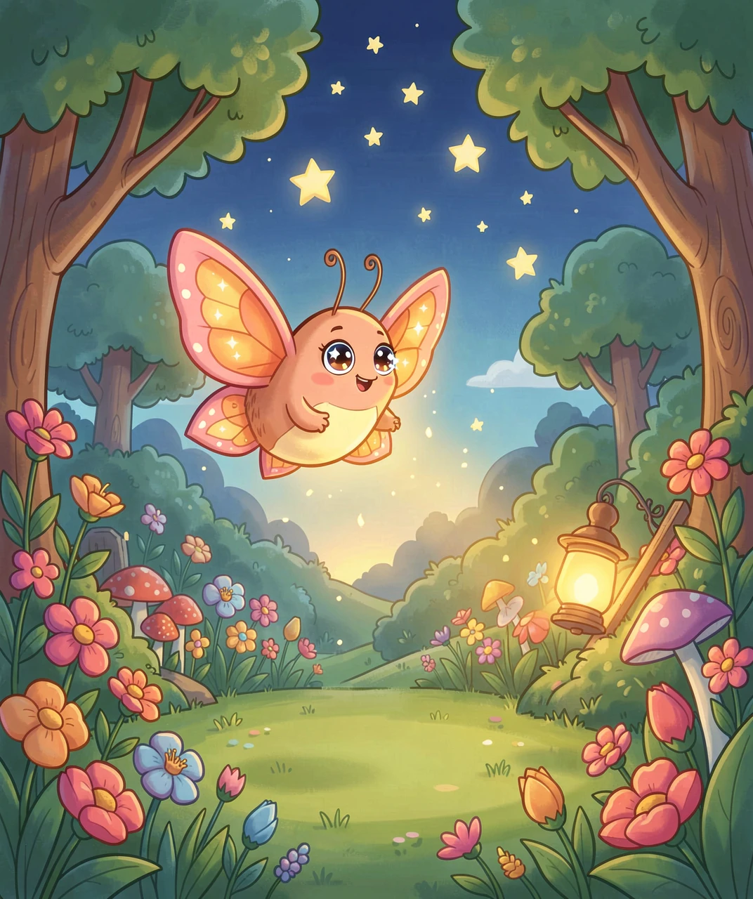
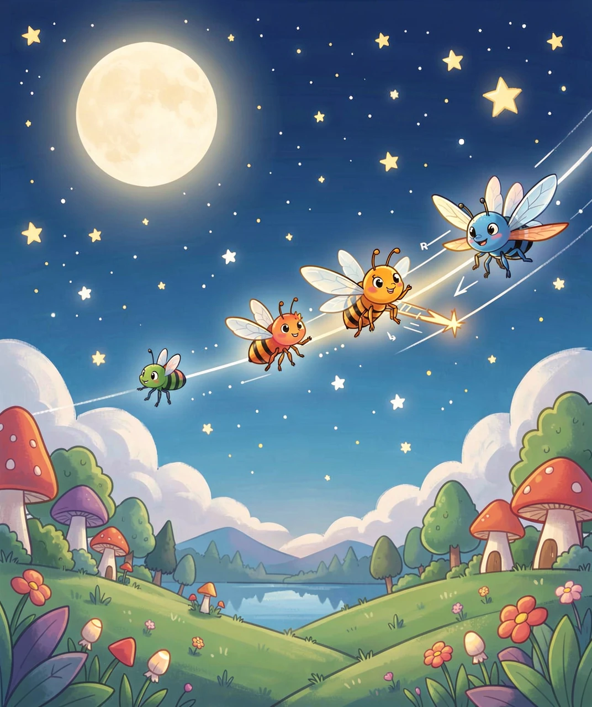
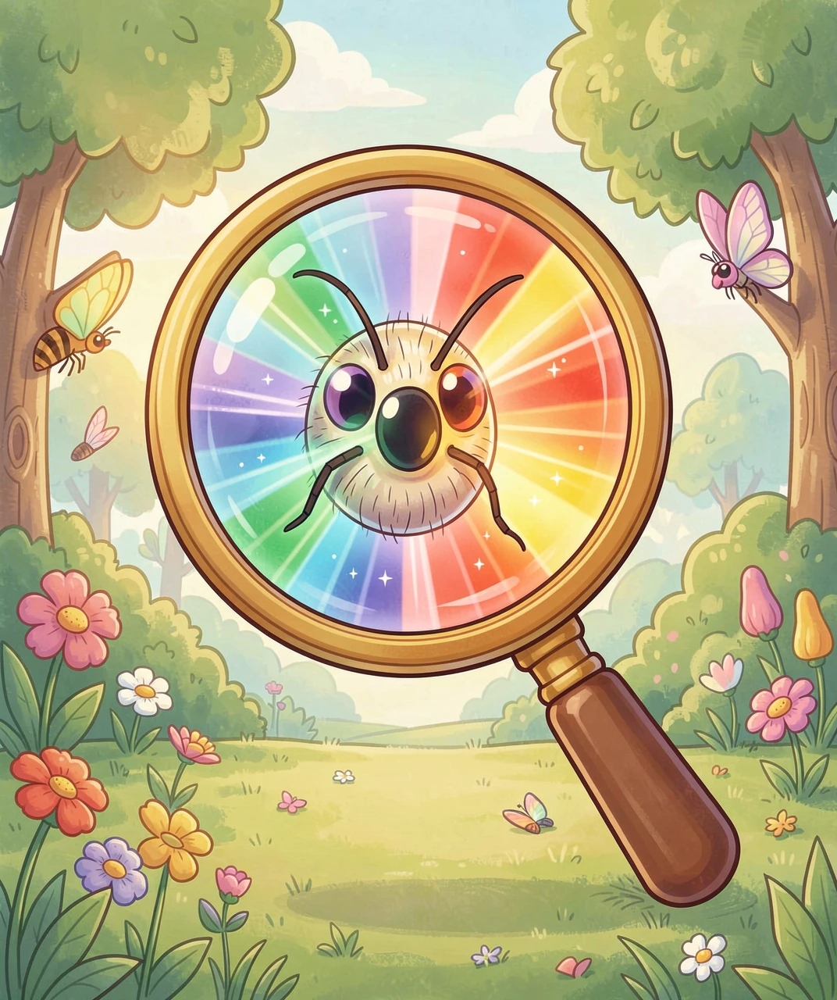
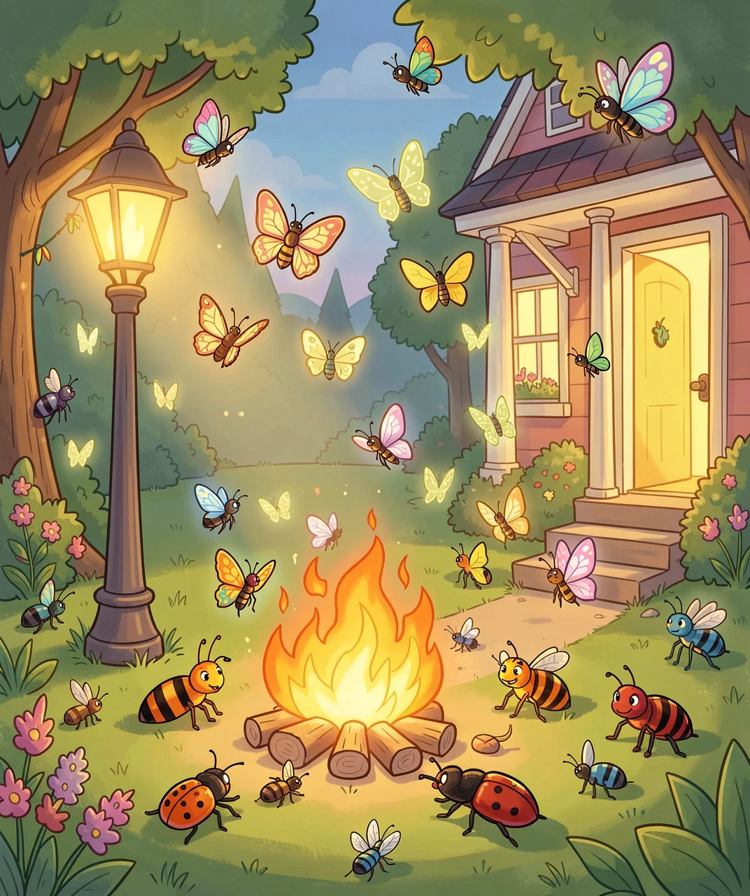
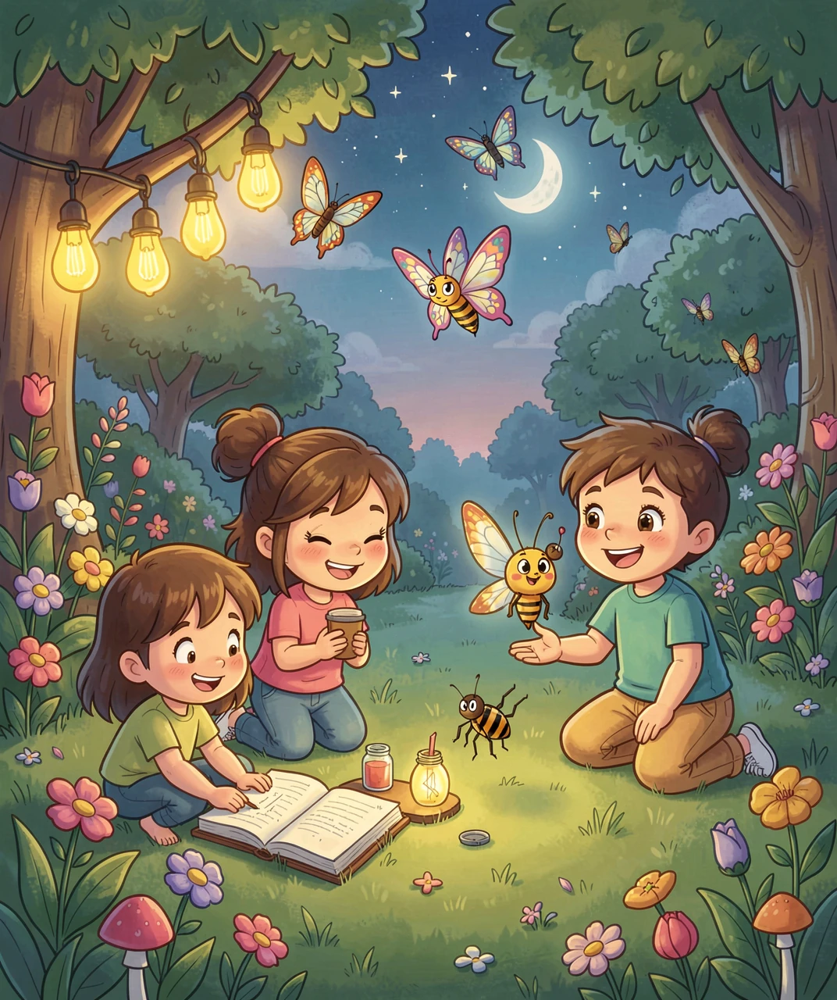

为什么飞蛾和其他小虫总喜欢往灯光上撞？
夏天的夜晚，你坐在窗户旁边看书，突然听到「啪」的一声——一只小小的飞蛾，正扑在台灯上不肯离开。你有没有想过：为什么这些小家伙那么喜欢灯光，哪怕撞得头晕眼花也不肯走呢？
其实不只是飞蛾。蚊子、甲虫、草蛉、飞蚁……很多在夜里活动的昆虫都会被灯光吸引。这个现象在中国有一个古老的说法，叫做「飞蛾扑火」——就是说飞蛾像不怕死一样冲向火焰。
但科学家们发现，飞蛾并不是真的「喜欢」火光。这背后藏着一个充满误会的故事……

🦋 图1：一只可爱的小飞蛾正朝着温暖的灯笼飞去
要理解飞蛾为什么扑灯，我们先得回到很久很久以前——在人类发明电灯之前。
那时候，夜空中最亮的东西只有一个：月亮。飞蛾在黑暗的夜晚飞行时，需要一个固定的参考物来导航。它们发明了一个天才的办法：
💡 「横定向」飞行法：飞蛾让月亮（或其他遥远的光源）始终保持在眼睛的某个固定角度上。比如，飞蛾让月亮一直在它身体的右侧45度角。因为月亮非常非常远，所以月光到达地面的角度几乎不变，飞蛾只要保持这个角度不变，它就能沿着一条直线飞行——就像我们看北极星认北极一样！
这个方法用了上亿年，一直运转完美。直到……人类点起了灯。

🧭 图2：飞蛾用月光做指南针，沿着直线快乐地飞行
现在让我们来做一个思维实验：
想象你是一只飞蛾，你的导航规则是「让光源保持在身体右侧45度角」。如果光源是 月亮（非常非常远），你飞一公里，月亮在你右侧的角度还是45度，所以你是沿一条直线在飞——完美！
但如果光源换成了一盏 台灯（就在你身边几米远），情况就完全不同了：
这就是真相：飞蛾并不是想扑灯，它是被自己用了上亿年的导航系统给「骗」了！人造灯光很近很近，破坏了飞蛾的平行光假设，让它它绕着灯越绕越近。

🔬 图3：看看飞蛾神奇的复眼和触角，像不像外星科技？
其实，这个「被灯光骗了」的故事主角不只有飞蛾！
很多夜间活动的昆虫都会用类似的方法导航——靠天空中最亮的固定参考物。当人造灯光出现，它们同样会中招：
🦟 蚊子依靠月光和气味辨别方向，却被路灯扰乱飞行路线，绕来绕去绕到了你家的纱窗上。
🐞 萤火虫靠闪烁的光信号寻找伴侣，但城市的灯光太亮，让它们根本看不到伙伴发出的微弱求偶闪光——久而久之，萤火虫数量就变少了。
🪲 金龟子和甲虫也会飞向路灯和建筑物外灯，有些甲虫绕到力竭，掉在地上一动不动。
这个现象有个专门的科学名词：「趋光性」photoaxis。虽然科学家还在争论具体机制（有横定向说、视盲说、紫外传粉信号说），但有一点是共识：人造灯光对夜行昆虫的生活造成了巨大的影响。

🪲 图4：不同昆虫围在不同光源旁边，它们都被光「骗」了
知道了真相之后，我们就可以做点什么来帮助这些夜晚的小居民啦！
✅ 关掉不需要的户外灯：睡觉前看看窗外，有没有一直亮着的花园灯或走廊灯？如果不需要，关掉它！
💛 使用黄光灯泡：研究发现，暖黄光（低色温）比冷白光（高色温）对昆虫的吸引力小很多。有的黄光「驱虫灯泡」可以减少80%以上的昆虫聚集。
🔦 用感应灯代替常亮灯：让灯只有人经过时才亮起，这样既省电又保护昆虫。
🌿 在花园角落留一片黑暗区：给夜行小昆虫一个安全的空间，它们也是大自然食物链中重要的一环——没有飞蛾，很多鸟儿和小蝙蝠就没有晚餐了！
下一次看到飞蛾在灯旁打转，你就知道：这不是它笨，而是它导航太厉害了——厉害到把一盏台灯当成了月亮呢。

🌟 图5：关掉多余的灯，用暖黄光，飞蛾们也会感谢你的！